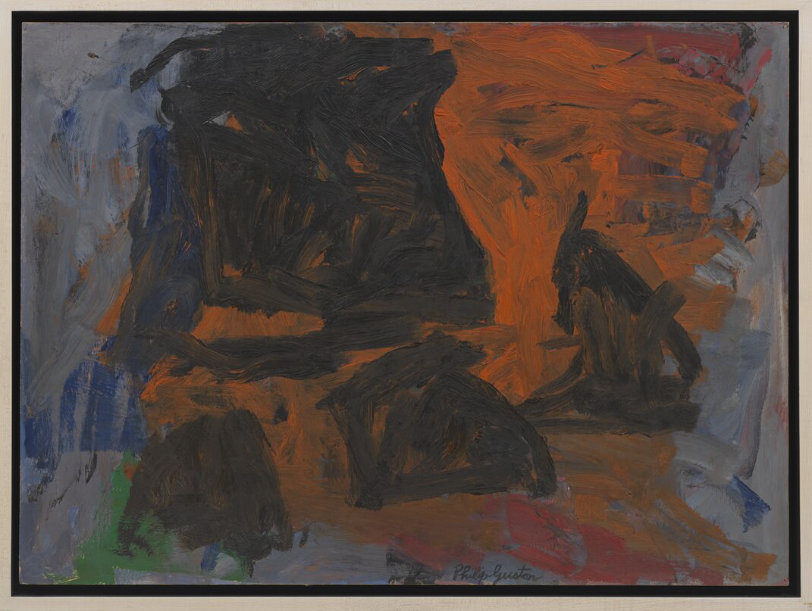
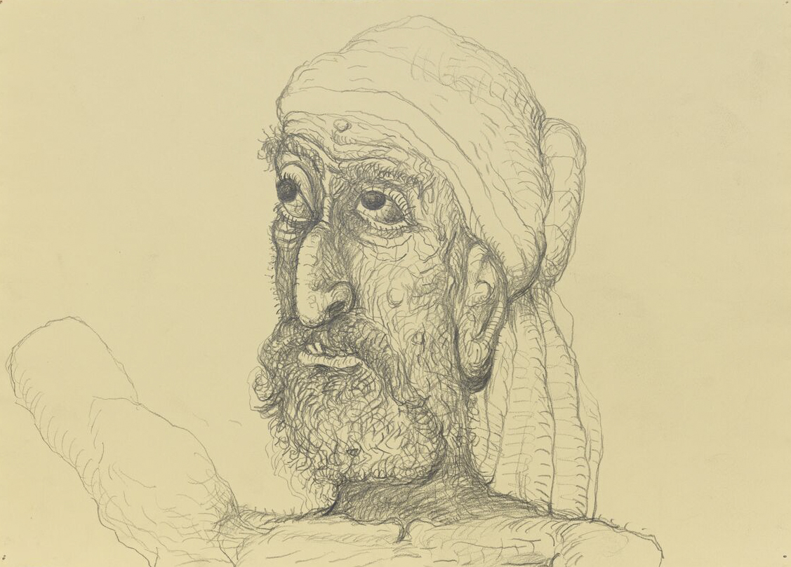
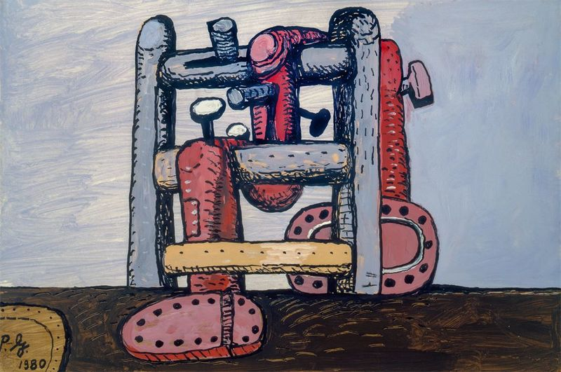

Mark Stevens: [looking at the paintings in Guston’s studio in Woodstock, New York]: You seem to love the fantastic.
Philip Guston: Fantastic? No, I don’t think so. I like things rooted in the tangible world. I like old-fashioned things like gravity, how we locomote when we walk. I used to lie sideways on a park bench and watch how people walk. I used to think how amazing it is, the locomotion. I don’t like fantastic when it means an overlabored use of the imagination. Anyway, all art is a kind of hallucination, but hallucination with work. Or dreaming with your eyes open.
MS: You start your paintings with the most ordinary objects in mind.
PG: It could be anything. A briefcase, or a bug crawling across the floor. Then I go on from there. I was thinking one night about Kafka’s story ‘The Metamorphosis,’ when he wakes up and he’s a bug and he’s late for work. Well, I think the most fantastic thing about this story is that this man has not really changed. He’s totally conscious, totally aware. There’s no metamorphosis. I like Isaac Babel, too, because he deals totally with fact. There can be nothing more startling than a simple statement of fact, in a certain form. As Babel says, ‘There’s no iron that can enter the heart like a period in the right place.’
MS: Or a brushstroke in the right place?
PG: You sweat like a dog for that. In the beginning the canvas is empty and you can do anything, and that’s the most frightening experience. You have to get the white out of the way. As you progress in the picture and it gets to where you’re involved with an inch in this rectangle which is your world, that’s when you’re most free.
MS: Then you find a sense of boundary or of control – a freedom from the anarchy of white?
PG: You want to feel resistance. Or I want to. All my pictures must be fought for. Lots of overpainting and rubbing out. You want to have lived it. The complicated problem is when you do a painting that you think looks good. Then you go into the house and you go to sleep and you wake up in an hour convinced that you’re kidding yourself. You haven’t lived it yet. So, without even looking at the picture you scrape the whole thing out and stay with it until – this is the mysterious part – you feel transparent.
MS: That reminds me of Stravinsky’s famous remark, that he was the vessel through which Sacre du Printemps passed.
PG: All artists have known that. When you look at paintings, you can always tell which part is forced and which part is free.
MS: It is grim work, painting your more grisly images?
PG: Someone once said to me, ‘Doesn’t this make you sad?’ It doesn’t at all. The important thing is you’ve let go of something inside, no matter what it is.
MS: You began your work as a figurative painter in the 1930s. Since then there have been two principal changes in your style – two hinges. The first was the turn to abstract expressionism in the late 1940s. The second was the return to figurative work in the 1960s. Could you explain some of the reasons you took up abstract expressionist painting
PG: I didn’t take it up. I didn’t join a club. Abstract expressionism was a phrase coined much later. But in 1947 I became lost for about a year, because I felt I had exhausted my subject matter, which was a series of pictures about children. I didn’t feel they were aesthetically felt – they were rhetorical. I was flattening out space at that point, too. In 1948 I went to Italy for the first time, got to brooding and feeling that those artists were abstract in many ways. I decided to start from scratch when I got back. I also knew painters like Tomlin, Kline, Pollock from the WPA 1930s, and they all had the same problems. They wanted a new territory, to leave cubist and semi-cubist painting. We all gave each other moral support. Toward the end of the 1950s I was slowly evolving toward a different kind of figuration. Sort of black heads on fields of gray. Again I began to feel the necessity for a subject. It’s a different contest when there’s both subject and structure.
MS: You mentioned how important it is for you ‘live’ your paintings. Do you like Harold Rosenberg’s definition of abstract expressionism as ‘action painting,’ an arena in which the artist …
PG: I was never certain what it meant. It’s so general. We argued about it for twenty years. Titian was an action painter. All painting is action painting. It’s not an arena in which to act. Act what?
MS: He might have said, ‘To try to act yourself, for a moment.’
PG: But that’s been the story since the cavemen, only the styles have changed. Besides, you don’t know yourself when you’re painting, and as for freeing the unconscious, all art’s unconscious as well as conscious. What’s meant by the unconscious anyway? I don’t know. I know less as I go along. Or more. Or simpler.
MS: In the mid-1960s you stopped producing your successful abstract works and did no painting at all. You just drew. What was going on?
PG: It was clearing the decks. It was like starting again, like a child, just taking a very simple line.
MS: Does that explain the extreme simplicity, almost crudeness, of those drawings?
PG: Could be. It was a feeling I had, in about ‘What would happen,’ I thought, ‘if I eliminated everything except just raw feeling and the brush and ink, the simplest of means without even the seductions of color?’ It was like testing myself, to see what I am, what I can do. You see, at that point in the 1960s, I wanted to be a stranger to myself.
MS: What did the critics say about the new figurative work?
PG: For the most part, they said I was finished, I was through. The New York Times attacked the show – the headline was, I think, ‘From Mandarin to Stumblebum.’ Since then, Dore Ashton has written a book about me,* and a few others have written sympathetically. There seems to be about an eight–to ten—year lag. For a while I was with no gallery, but that made me feel good. Freedom is a marvelous thing. You know that old chestnut, that people are afraid to be free – well, it’s true. When I had my first show in the new figurative style in about 1970, the people at the opening seemed shocked. Some painters of the abstract movement – my colleagues, friends, contemporaries – refused to talk to me. It was as if we’d worked so hard to establish the canons of a church and here I go upsetting it, forgetting that that’s what good artists should do. At the opening only two painters, David Hare and Bill de Kooning, acted differently. It wasn’t necessarily that they liked it. De Kooning said something else. He said, ‘Why are they all complaining about you making political art, all this talk? You know what your real subject is, it’s about freedom, to be free, the artist’s first duty.’
MS: Your earlier success had become a kind of prison?
PG: It was more that in working with subjects and tangible forms I was led into some surprising and unpredictable structures. That was exciting. Also, I began to discover that the art world in general is very conventional. They’re just as conventional as the TV world, in that, once you establish something, you’re in a niche and that’s that. My concept always has been that artists should change all the time. Clement Greenberg once said that some artists, like de Kooning and me, were ‘homeless.’ He didn’t mean it as a compliment, but we accepted it as one.
MS: Have museums shown any interest in your figurative work?
PG: Except for this coming show [the San Francisco Museum of Modern Art retrospective in 1980], it stopped dead. I went through many years of there being no activity at all. That’s why I taught.
MS: Do you read much art criticism?
PG: Used to, but now I don’t pay much attention to it. I gave all my art magazines away, and when I read criticism, it’s mostly literary criticism. In fact, most of my friends are writers. I like their reactions to paintings. I like how they see.
MS: What’s different about it?
PG: They see without the art world lingo. Sharply. Freshly. Sometimes they’re funny, or their reaction is funny, and I enjoy that. I don’t like writing that’s snarled up. It’s a cover-up. Good writing is simple. Meyer Schapiro last year sent me a pamphlet he wrote about Van Gogh, and it’s written very simply. T.S. Eliot takes complicated subjects in his essays and writes about them in the simplest way. You wonder, is the man’s thought so clear he doesn’t need to obfuscate it?
MS: Have you kept up with contemporary art?
PG: I don’t think contemporary American art is much worth talking about. It’s college art. It’s art that comes from being taught in colleges, in which you preconceive what it is you want to do and then you illustrate what it is you have preconceived. Totally mannerist. In the last several decades, modern art has been degraded into ornament. It’s too bad. It fits American society very well. In an office building you’re not going to see one of my pictures on the wall next to the plant, but you could put a picture of a few verticals and horizontals there. I prefer a more critical art.
MS: The term avant-garde doesn’t mean much today.
PG: The term avant-garde means money. It used to be – well, a military campaign would have an avant-garde to smell out the enemy. Now it’s the New York Thruway. It’s an accommodating art. If you have the proper writing, advertising, blurbs, you’re set. The public behaves like the avant-garde now – it’s only too anxious to be new. Actually, I like Andy Warhol, because he takes all this foolishness and pushes it to the extreme. What’s wrong with modernism in painting is that it paints for this century. People see quickly today, so they paint so you can see it quickly. How often do you go into a museum and you see paintings that, so-called, ‘work within the ’? And your eye just bounces off. Anybody can go out and put down pretty colors, or smear around, or use a T-square. It’s become attenuated finally, without the crudeness, guts, rawness, whatever you want to call it, when you really have to grapple with a subject. I think what da Vinci wrote – that painting is a thing for the mind – is still true.
MS: But don’t serious artists have to confront the formal ideas of their time? You might prefer your grandparents, but you are closer to your parents. Or at least since the Renaissance, the way great individual artists have been able to find their own space – both formally and personally – is to explore, change, elaborate what’s fresh in the art of their time.
PG: I’m glad I’m working now. But the artists I admire were also great students of the past, you know. To my mind, the beginnings of modern art are wonderful. Certainly Cézanne is the key figure, but you know he meant exactly what he said when he wrote that he was trying to do Poussin after nature. And he was a great student of El Greco, Tintoretto, and Titian. Picasso, de Chirico, Léger, and Matisse carried on from there, and of course they also studied painting from the past. They had a subject and used objects. They really wanted to find out what it was about the old masters that made them so solid, and what gave them that particular quality of fluidity and solidity at the same time. That effort is exhilarating. I don’t see much after Picasso and Léger, though. I used to like Miró for his playfulness, but you can get tired of playfulness, too. Paul Klee, for instance. It’s like this is humorous week, ‘Let’s be humorous.’
MS: In the art world there’s a pervasive sense that modernism has run its course. I don’t know whether that’s true, but what do you think is left for artists?
PG: The rules of the game were established centuries ago. At the same time there is a problem, as you say, because there is such a thing as modernism, and there are certain problems that we have that separate us from the past. There’s no point in pretending you’re walking down the streets of Florence in the fifteenth century.
MS: Certain formal problems? That’s been the drift of criticism.
PG: Our great problem is subject. What to do. How to begin. I’ll sound moralistic: to do something worthwhile. Much modern art has only itself as a subject. I don’t mean that it’s abstract or not. I never felt that mattered. What could be more abstract than Goya? But a lot of contemporary art, whatever might be claimed for it, is made simply to create a pleasant environment.
MS: But that’s also been a stimulus for the creation of some of the greatest art of the past.
PG: No, I don’t think so. There was much more to consider in the art of the past. But the problem is deeper, this one of subject. It’s a cultural and psychological problem for us. I don’t know what the hell you do.
MS: A reductive artist might say he’s dealing with pure questions of form and color – his subject is the meanings that are part of the nature of those things. Without the distraction of realistic images.
PG: There’s no such thing as pure manipulation of form or color. That’s a myth. What’s the difference between that and a sphere in Piero? The shibboleths of the last fifty years are amazing. But take an abstract painter like Mondrian. He’s so good that when you go to the museum and there’s this picture and that and you see a Mondrian, you go right to it. It’s like a gun pointed at you. It’s because he’s passionate. He was a marvelous religious crank. He put his passion into forms. His passion for Theosophy and art was a true subject. I think an artist has to reject all these shibboleths.
MS: In favor of what?